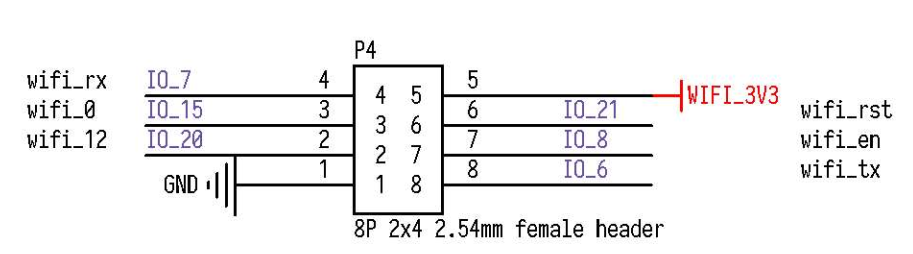
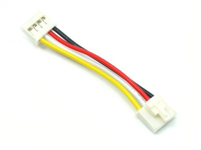

MaixCube
2022-07-06
使用教程
概述
SIPEED MaixCube 是基于我们 M1n 模块(主控:Kendryte K210)开发的一款集学习开发和商用一体的人脸识别产品.
MaixCube 集成摄像头、TF卡槽、用户按键、TFT显示屏、锂电池、扬声器麦克、扩展接口等, 用户可使用 Maix Cube 轻松搭建一款人脸识别门禁系统, 同时还预留开发调试接口, 也能将其作为一款功能强大的 AI 学习开发板.
MaixCube 外观及功能介绍
外观一览

板载功能介绍
- 电源管理控制单元: AXP173
- 板载 200mAh 锂电池,支持用户充放电控制
- 音频驱动 IC: ES8374
- 支持音频录制,播放
- 三轴加速度传感器: MSA301
- Camera OV7740:
- 1.3 IPS LCD:
- RGB: 板载两颗 RGB LED
- USB Type-C:Type-C 接口,正反盲插
板载扩展接口
Maix Cube 对用户开放了两个高度扩展的接口: SP-MOD 与 Grove 接口,
用户可以很方便的进行 DIY
SP-MOD 接口
SP-MOD 即为 sipeed module, simplify PMOD, super module
| 接口 | 接口描述 |
|---|---|
| SP-MODE 接口描述 |  |
| 硬件接口 |  |
Grove 接口
- Grove 模块接口
Grove 接口的线缆有 4 种颜色, 用户可以根据颜色快速区别

| --- | 颜色 | 描述 |
|---|---|---|
| pin 1 | 黄色 | (例如, I2C Grove Connectors上的SCL) |
| pin 2 | 白色 | (例如, I2C Grove Connectors上的SDA) |
| pin 3 | 红色 | VCC (所有的Grove接口红色都是VCC) |
| pin 4 | 黑色 | GND (所有的Grove接口红色都是GND) |
Grove模块主要有 4 种接口:
- Grove Digital 数字接口:
Grove 数字接口由 Grove 插头的四条标准线组成.
两条信号线通常称为 D0 和 D1 .
大多数模块只使用 D0, 但有些(像LED Bar Grove显示屏)使用两者.通常核心板会将板卡上的第一个Grove连接头称为 D0, 第二个称为 D1.第一个接头会连接到主控芯片的 DO/D1 管脚, 第二个连接头会连接到主控芯片的D1/D2引脚, 后面的连接头以此类推.
| pin | Function | Note |
|---|---|---|
| pin1 | Dn | 第一个数字输入 |
| pin2 | Dn+1 | 第二个数字输入 |
| pin3 | VCC | 供电引脚 5V/3.3V |
| pin4 | GND | 地 |
- Grove Analog 模拟接口
Grove模拟接口由Grove插头的四条标准线组成.
两条信号线通常称为A0和A1.
大多数模块只使用A0，但有些（像LED Bar Grove显示屏）使用两者.
通常核心板会将板卡上的第一个Grove连接头称为A0，第二个称为A1。第一个接头会连接到主控芯片的AO/A1管脚，第二个连接头会连接到主控芯片的A1/A2引脚，后面的连接头以此类推.
| pin | Function | Note |
|---|---|---|
| pin1 | An | 第一个模拟输入 |
| pin2 | An+1 | 第二个模拟输入 |
| pin3 | VCC | 供电引脚 5V/3.3V |
| pin4 | GND | 地 |
- Grove UART :
The Grove UART 是特殊的一种数字输入输出接口
它使用引脚 1 和引脚 2 进行串行输入和发送
引脚1是 RX 线(用于接收数据, 因此是输入)
其中引脚 2 是 TX 线(用于向 Grove 模块传输数据)
| pin | Function | Note |
|---|---|---|
| pin1 | RX | 串行接收 |
| pin2 | TX | 串行发送 |
| pin3 | VCC | 供电引脚 5V/3.3V |
| pin4 | GND | 地 |
Grove I2C:
有许多类型的 I2C Grove 传感器可用.MaixAmigo 上的 Grove 只支持 3.3V 传感器Grove I2C 连接器具有标准布局.引脚 1 是SCL信号, 引脚 2 是SDA信号
| pin | Function | Note |
|---|---|---|
| pin1 | SCL | I2C 时钟 |
| pin2 | SDA | I2C 数据 |
| pin3 | VCC | 供电引脚, 5V/3.3V |
| pin4 | GND | 地 |
板载 I2C 设备
MaixCube 板载 I2C 传感器/IC
| IC | 设备 id | I2C 地址(7位地址) |
|---|---|---|
| ES8374 | 0x08 | 0x10 |
| MSA301 | 0x13 | 0x26 |
| AXP173 | 0x68 | 0x34 |
MaixCube参数

| K210 芯片基本参数 | |
|---|---|
| 内核 | RISC-V Dual Core 64bit, with FPU |
| 主频 | 400MHz （可超频至500MHz） |
| SRAM | 内置8M Byte |
| 摄像头帧率 | OV7740/QVGA@60fps/VGA@30fps |
| 语音识别 | 离线语音识别，声场 |
| 网络模型 | |
| 深度学习框架 | 支持TensorFlow \ Keras \ Darknet \ Caffe 等主流框架 |
| 外设 | FPIOA、 UART、 GPIO、 SPI、 I2C、I2S、 TIMER |
| 硬件加速单元 | |
| 开发板参数 | 板载资源 |
|---|---|
| 板载接口 | |
| 尺寸 | 40*40*18.6mm |
| 供电电压 | USB-type或内部锂电池（200mAh） |
| 软件开发 | |
|---|---|
| 软件环境 | MaixPy（microPython） |
| 开发环境 | MaixPy IDE、PlatformlO IDE、Arduino IDE等 |
| 编程语言 | C，MicroPython |
相关资料下载
Sipeed-Maix-Cube 资料下载：Sipeed-Maix-Cube
Sipeed-Maix-Cube 规格书下载：Sipeed-Maix-Cube
Sipeed-Maix-Cube 原理图下载：Sipeed-Maix-Cube.pdf
产品技术支持
Maix系列产品可以在多种场景实现客户不同方面的需要，在AIoT上已经广泛的使用，品质和性能在行业内已经有非常好的口碑，专业的技术团队为广大客户解决硬件设计和软件功能上的各种各样问题。专业技术支持和更详细资料请联系商务support@sipeed.com。